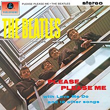
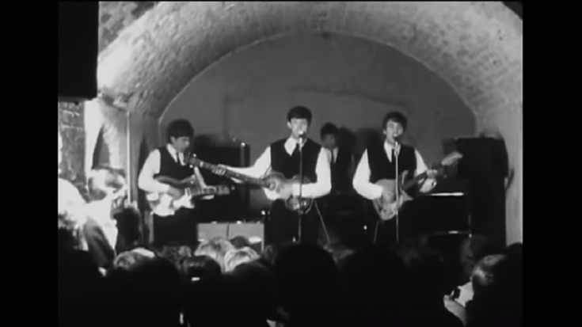
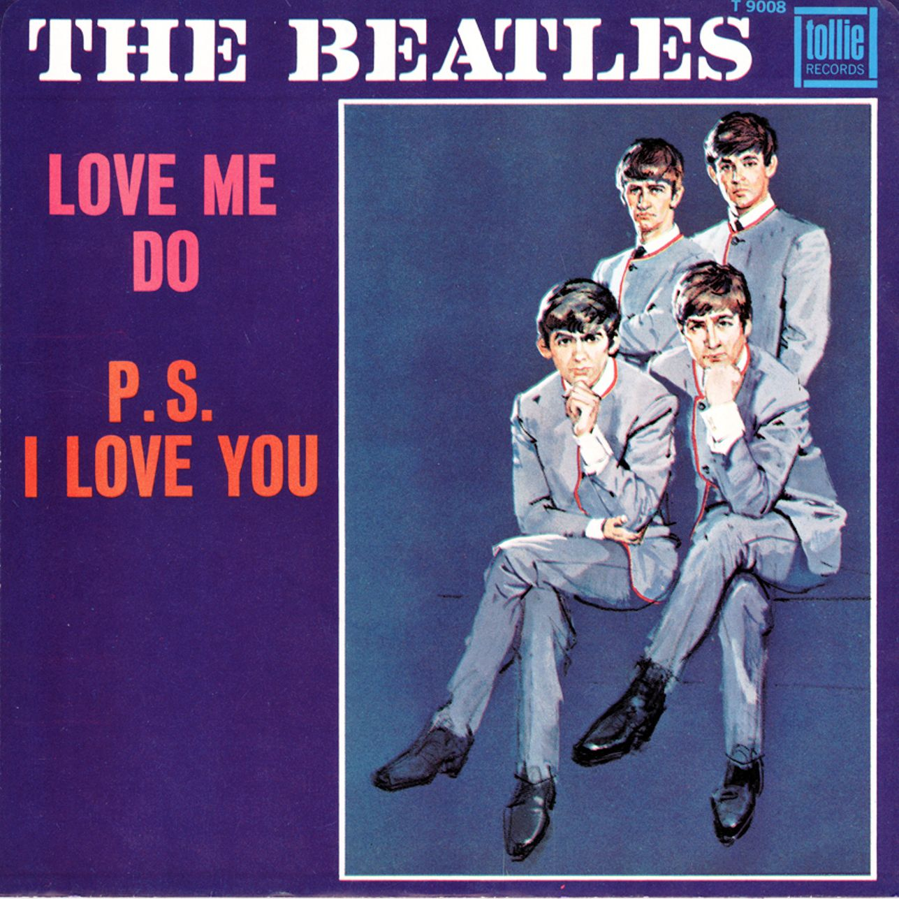

History
Welcome to our histroy page. Here you can learn about how The Beatles came about and their path towards their successful music career.
Introduction
The Beatles is an English rock band, formed in Liverpool in 1960, and is regarded as the most influential band of all time. Our best-known line-up comprised of John Lennon, Paul McCartney, George Harrison and Ringo Starr.
First album
On 11 February 1963, the Beatles recorded ten songs during a single studio session for their debut LP, Please Please Me. It was supplemented by the four tracks already released on their first two singles.
First Concert
The Beatles performed for the first time at The Cavern Club at 10 Mathew Street, in Liverpool on February 9, 1961. Surprisingly, the show was a huge success despite the low audience. We gained more attention and were allowed to perform more often and there were more audiences to the point of tickets being pre-purchaased.
Most influential song
With thehelp from two influential characters, Brain Epstein and George Martin, the group became mainstrain the United Kingdom in 1962 with the new sing "Love Me DO" This gave the Beatles a boost in their popularity and we became widespread and started to tour. This also gave us the confidence to branch out into other countries such as the US